Juegos
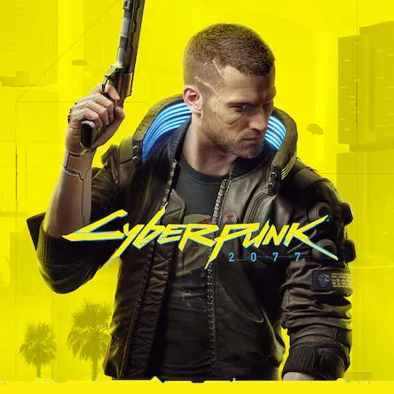
Cyberpunk 2077
Entra en Night City y conviértete en V, un mercenario que lucha por sobrevivir después de robar un prototipo que le implanta a un fantasma digital en su cabeza. Tu misión: librarte del chip y decidir tu propio destino en una megalópolis corrupta y obsesionada con la tecnología.
Metacritic: 86
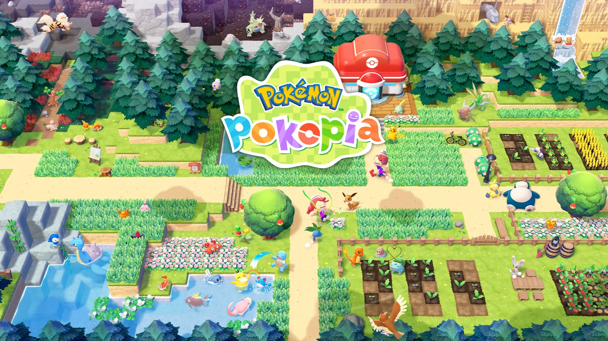
Pokémon Pokopia
Pokémon Pokopia nos invita a ponernos en la piel de un Ditto y transformar una tierra baldía en un hermoso hogar para diversos Pokémon. Podrás entretenerte de mil maneras, como recolectando bayas, juntando rocas y madera, creando mobiliario, cultivando la tierra para cosechar verduras, construyendo casas para los Pokémon que conozcas, etc.
Metacritic: 89
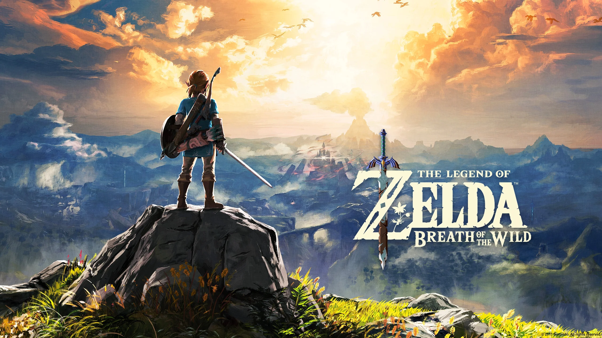
TLZ: Breath of the wild
¡Breath of the Wild es una explosión de aventura pura! Un mundo abierto gigantesco que te invita a explorar sin límites, descubrir secretos a cada paso y liberar tu creatividad en cada batalla. Es mágico, emocionante y absolutamente adictivo. ¡Una joya que te atrapa desde el primer segundo!
Metacritic: 97
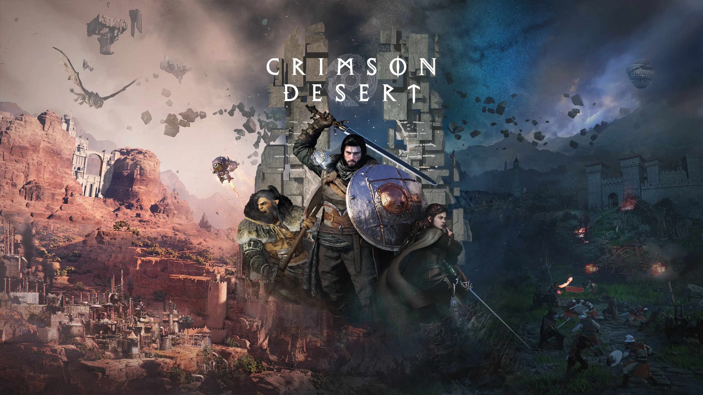
Crimson Desert
Crimson Desert se presenta como un videojuego de acción y aventura en mundo abierto que narra una historia ambientada en el hermoso pero brutal continente de Pywel. Kliff, líder de la Compañía Libre Melena Gris, debe cumplir con su misión, luchar en intensos combates y descubrir los misterios que esconde este lugar.
Metacritic: N/A
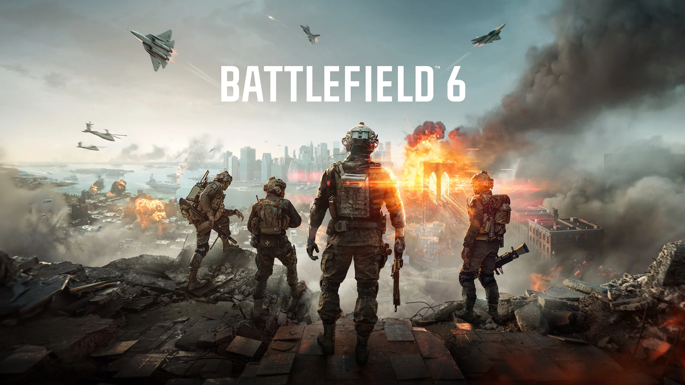
Battlefield 6
Battlefield 6 marca un regreso explosivo a la acción bélica a gran escala: un shooter lleno de caos espectacular, mapas enormes que cambian con la destrucción, combates intensos entre infantería, tanques y aviones, y un multijugador que recupera el espíritu clásico de la saga con partidas épicas y frenéticas. ¡Es Battlefield en su máxima potencia!
Metacritic: 84
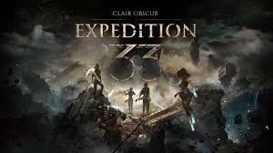
Clair Obscur: Expedition 33
Clair Obscur: Expedition 33 es una aventura de rol ambientada en un mundo fantástico inspirado en la Belle Époque. Cada año, una misteriosa Pintora despierta para borrar de la existencia a quienes alcanzan cierta edad. Como parte de la expedición número 33, deberás emprender un peligroso viaje para detener este ciclo mortal.
Metacritic: 92
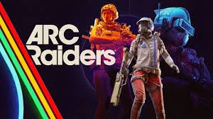
ARC Raiders
ARC Raiders es un shooter cooperativo de acción y supervivencia ambientado en un futuro donde la humanidad vive bajo la amenaza de máquinas gigantes llamadas ARC. Como Raider, deberás explorar un mundo devastado, reunir recursos y luchar junto a otros jugadores para sobrevivir a estas colosales amenazas.
Metacritic: 88
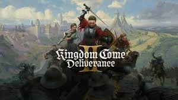
Kingdom Come: Deliverance II
Kingdom Come: Deliverance II continúa la historia de Henry en una Europa medieval realista y llena de conflictos. Deberás forjar tu destino en un mundo abierto repleto de ciudades, castillos y peligros. Combate realista, decisiones importantes y una narrativa profunda se combinan en una aventura histórica donde cada acción puede cambiar el curso de tu historia.
Metacritic: 88
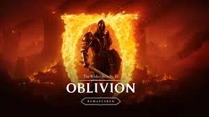
The Elder Scrolls IV: Oblivion Remastered
The Elder Scrolls IV: Oblivion Remastered trae de vuelta uno de los RPG más queridos con una nueva presentación visual. Regresa a Cyrodiil para detener la invasión de criaturas demoníacas que emergen desde los portales de Oblivion. Explora un enorme mundo abierto lleno de misiones, gremios y secretos mientras decides el destino del imperio.
Metacritic: 94
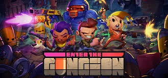
Enter the Gungeon
Enter the Gungeon es un frenético roguelike lleno de acción, disparos y caos constante. Explora una mazmorra cambiante repleta de enemigos armados hasta los dientes, trampas mortales y tesoros inesperados. Elige a tu héroe, mejora tu arsenal y enfréntate a jefes absurdos mientras buscas la legendaria arma capaz de cambiar el pasado. Rápido, desafiante y adictivo, cada partida es un nuevo festival de balas.
Metacritic: 84
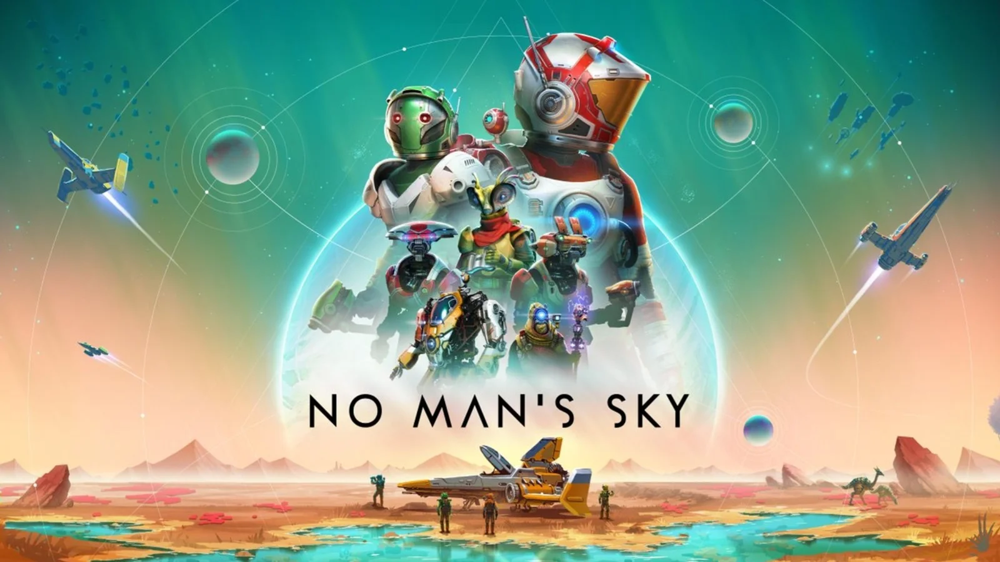
No Man’s Sky
No Man’s Sky es una aventura de exploración y supervivencia ambientada en un universo prácticamente infinito. Viaja entre sistemas estelares generados proceduralmente, descubre planetas únicos llenos de vida, recursos y misterios, y construye tu propio camino como explorador espacial. Podrás comerciar, mejorar tu nave, construir bases y enfrentarte a los peligros del cosmos.
Metacritic: 71
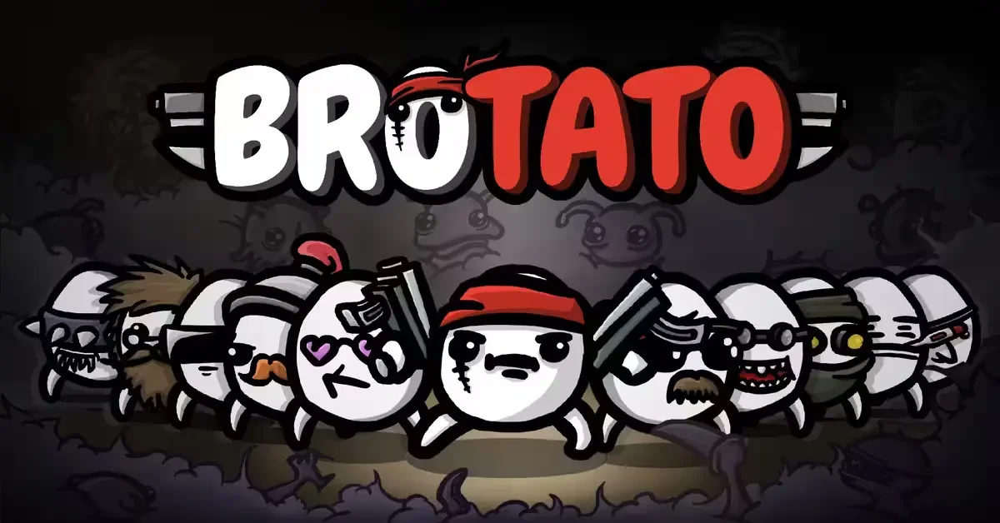
Brotato
¡Brotato es una locura frenética y divertidísima! Controlas a una patata armada hasta los dientes mientras sobrevives a oleadas de enemigos cada vez más absurdas, combinando armas, mejoras y builds rotísimas. Es rápido, caótico y tremendamente adictivo. ¡Un festival de acción que no te deja soltarlo!
Metacritic: 84
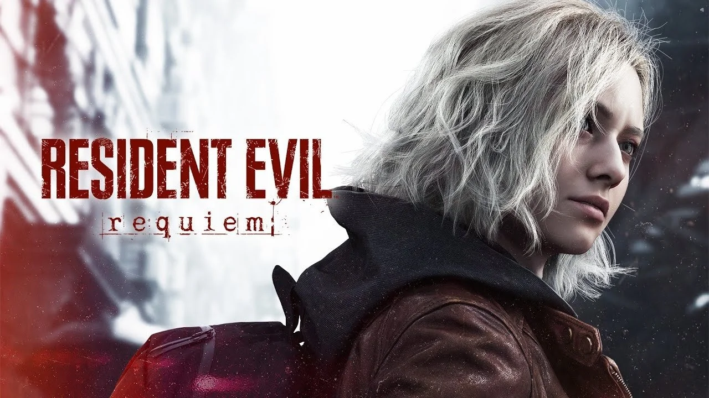
Resident Evil Requiem
La novena entrega principal de la saga de terror y supervivencia de Capcom del que promete ser el videojuego más inmersivo hasta la fecha, llevándonos de vuelta a la emblemática Raccoon City, el hogar del desastre biológico que sacudió el mundo, combinando aspectos profundamente aterradores del horror psicológico con la acción.
Metacritic: 93
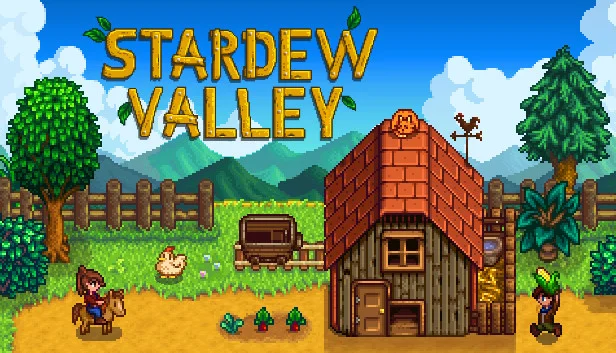
Stardew Valley
Stardew Valley es un juego de rol de simulación donde dejas la vida de oficina para heredar una granja abandonada. Tu misión es restaurarla, cultivar, pescar y socializar con los habitantes del pueblo, construyendo una nueva vida en el campo.
Metacritic: 89
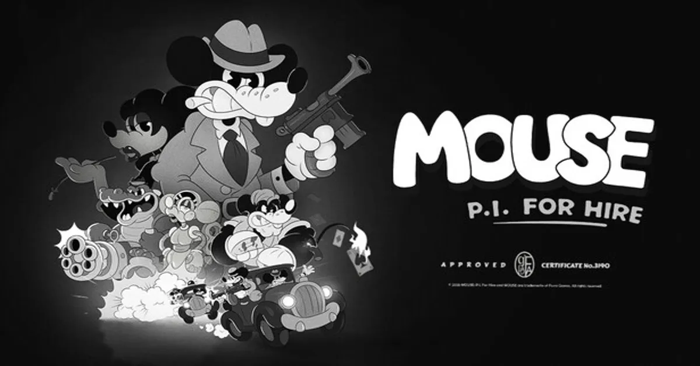
Mouse: P.I. For Hire
Mouse: P.I. For Hire es un videojuego de acción-shotoer en primera persona que parece protagonizado por el Mickey Mouse de los dibujos clásicos de Disney. Tomas el control del detective John Mouston mientras se abre paso a través de una ciudad corrupta llena de ladrones y otros tipos de peligros.
Metacritic: N/A